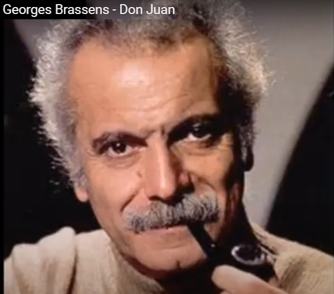

Georges Brassens chante "Don Juan" accompagné de P. Nicolas
|
1. Praise to those who slam brakes, for fear of squashing flat The little hedgehog lost, the toad gone the wrong path And praise to Don Juan, for having smiled one day At her whom the rest did not rate in any way! Downright ugly is that girl: I must have her. 2. Praise to the cop who stopped the cars from going through To let get across all the cats of Léautaud! (1) And praise to Don Juan for the date he made with The girl left on the shelf, Whom Amor despises! Downright ugly is that girl: I must have her. 3. Praise to the nameless chap who walks by and shuts up When the wild rabble yells: «Get him- lets string him up! » (2) And praise to Don Juan for his amorous word To the one whom the rest never bothered to court! Downright ugly is that girl: I must have her. (3) 4. And praise goes to that priest saving his enemy The day of the slaughter of Saint-Barthélémy ! (4) And praise to Don Juan who covered in kisses The girl that the others refused a single kiss! Downright ugly is that girl: I must have her. 5. And praise to the soldier who threw aside his gun Rather than kill off the Hostage, his fellow man! And praise to Don Juan for daring pull thigh high The skirts of the girl who wore them low. Was she shy! Downright ugly is that girl: I must have her. 6. Praise to the kind nun, who, in weather none too hot Thawed in her hand the pen- -is of the limbless Scot And praise to Don Juan who one night set aflame This bum whose sole use was sitting on. What a shame! Downright ugly is that girl: I must have her. 7. Praise to those who having no lofty thought and ground Just seek not to give too much grief to those around! And praise to Don Juan who made a woman of Her, who, but for him, would ne'er have known a man's love! Downright ugly is that girl: I must have her. Transl. Christian Souchon (c) 2017
TRANSLATION NOTES
1) The writer Paul Léautaud, who died in 1956 was said to have owned at least 300 cats and 150 dogs in his lifetime.
2) "Haro sur le baudet!" - This is the rallying cry of a lynch mob and they are saying Lets string up the donkey. A reference to La Fontaines famous fable: Les Animaux Malades de la Peste. The kingdom had been hit by a terrible plague and the Lion King decided it was Gods punishment for wrongs they had done and asked all to confess. The King began by telling of the sheep and shepherds he had eaten and the other powerful predators of court made similar confessions. All the self-flatterers of the court agreed that there was no harm in these deeds. Then came the turn of the humble donkey and he confessed that he had once eaten a mouthful of grass from some-one elses meadow .The rich and powerful courtiers were in uproar at the crime of the poor donkey:
So they hanged the donkey. La Fontaine dangerously explains how his fable relates to justice in the court of Louis XIV.
3) This Don Juan finds a strong attraction in this girl that he cant explain and he is risking the derision of every one of his mates in seeking love with this girl.
4) On the 23rd August (Saint-Barthélémys Day) 1572, a pogrom was launched against the Huguenots of France. The death toll has been estimated as high as 30,000 and the Protestant movement in France was dealt a severe blow.
5) As it is the case for most of the Brassens songs at this site this singable English translation is based on the prose translation by David Yendley posted on his blog (http://dbarf.blogspot.fr/2012/05/alphabetical-list-of-my-brassens-songs.html) whence the present notes are borrowed:
